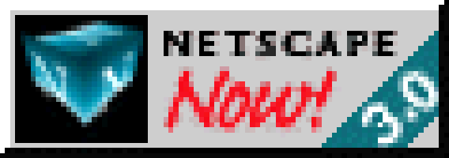
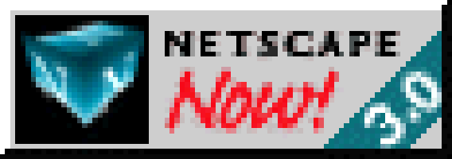

hbs18's page
Android
Night Light enabler for Android 7.1
A simple mod which enables the usually hidden Night Light feature.
OOS Improvements
A modification which changes accent colors and other things on OOS 5.
Improved AOD for OxygenOS 5.0
Removes the dumb red 1 on the OOS 5 ambient display clock.
StudyBuddy
A flashcards-based studying and revision helper app.
Ybese / Cryptocurrency trading simulator
Simulated cryptocurrency trading. Lose money without your significant other putting you in the doghouse. Very unfinished app.
Assetto Corsa
Nissan Silvia K's Type-S (S14)
Beautiful soap-bar shaped 90s Nissan coupe.
BMW M3 Coupe (E46)
Thought by many to be the finest M-car.
Mitsubishi GTO Twin Turbo (Z16A)
Mitsubishi's aggressively styled (for the time) 90s technology demonstrator and halo car.
Porsche 911 GT1 Strassenversion (993)
Did you know these were actually 993 Targas?
Nissan Skyline GT-R V-Spec (R33)
Another Nissan soap bar but with two more cylinders and differentials.
Toyota Supra RZ (A80)
More than you can afford, pal.
Random
Monster Reviews
My opinions on all the flavors of Monster I've tried so far.
Uvozni automobili
A website I made for a college final exam. Feel free to imagine me in a brown suit and a cowboy hat while reading that.
How to get better Lutris game icons
Lutris, by default, creates shortcuts with blurry icons. Here's how to fix that.
Interception Capabilities 2000
Report on the development of surveillance technology and risk of abuse of economic information. By Duncan Campbell, 1999.
MMOS - Django webapp s virtualnim strojevima
Instructions for setting up a sample network with a Django webapp, external database server and a cache server. Done as a college assignment. Written in Croatian.
if you see this, you deployed from github
Updated on DATEHERE
This site is best viewed in:
 
